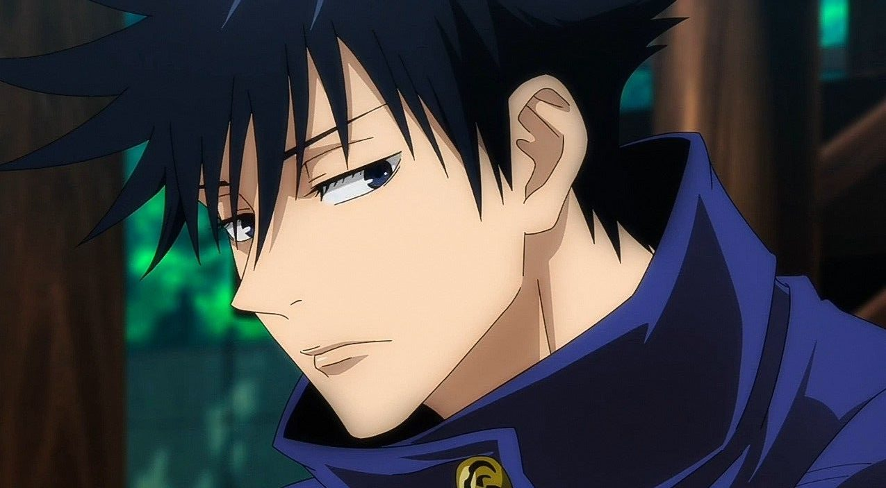

Yuji itadori

Es el protagonista de la serie de manga y anime Jujutsu Kaisen. Yuji es un chamán de jujutsu de primer año en la Escuela Técnica de Magia del Área Metropolitana de Tokio, quien se adentró al mundo de la hechicería después de comerse uno de los veinte dedos pertenecientes a Ryomen Sukuna, un poderoso espíritu maldito,
un ser manifestado a partir de la energía maldita de las emociones negativas que fluyen en los humanos.
Ver mas
Satoru gojo

es un personaje de la serie de manga y anime Jujutsu Kaisen. En la historia, Satoru es el maestro de la clase de primer año de la escuela de magia de Tokio, que consta de los tres personajes principales de la serie, Yūji Itadori, Megumi Fushiguro y Nobara Kugisaki. A pesar de ser considerado
el hechicero más fuerte, es retratado como un tonto que respeta muy poco a sus superiores.
Ver mas
Megumi fushigura

es un personaje ficticio de la franquicia de anime y manga Jujutsu Kaisen, creado por Gege Akutami.Al heredar la técnica maldita del Clan Zenin,
se convirtió en el objetivo principal de la familia, tratándolo de «comprar» por una gran suma de dinero.
Ver mas